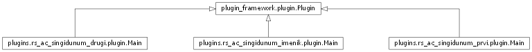

plugin_framework package¶
Submodules¶
plugin_framework.plugin module¶
-
class
plugin_framework.plugin.Plugin(spec)[source]¶ Bases:
objectOva klasa predstavlja osnovu za svaki konkretan plugin. Klasa treba da je apstraktna (spram modela) ali ovde smo je realizovali kao konkretnu kako bismo specificirali atribut _spec. U apstraktnim klasama u Pythonu ne postoji inicijalizator pa samim tim, atribute na nivou objekta ne mozemo da definisemo drugacije sem kao metode (property), tako da je ovo realizovano kao regularna klasa.
-
category¶ Property za dobavljanje kategorije iz metapodataka specifikacije.
-
description¶ Property za dobavljanje opisa iz metapodataka specifikacije.
-
enabled¶ Property za dobavljanje podatka o dostupnosti iz metapodataka specifikacije.
-
name¶ Property za dobavljanje imena iz metapodataka specifikacije.
-
size¶ Property za dobavljanje velicine iz metapodataka specifikacije.
-
symbolic_name¶ Property za dobavljanje simbolickog imena iz metapodataka specifikacije.
-
version¶ Property za dobavljanje verzije iz metapodataka specifikacije.
-
plugin_framework.plugin_service module¶
-
class
plugin_framework.plugin_service.PluginService[source]¶ Bases:
objectKlasa koja manipulise nad prosirenjima (pluginovima) u prosirivom okviru.
-
get_by_symbolic_name(symbolic_name)[source]¶ Vraca plugin koji ima naziv symbolic_name. Ukoliko se podesi da vise pluginova ima isti symbolic_name, vraca se samo prvi.
Parameters: symbolic_name (str) – naziv spram kog pretrazujemo sve dostupne pluginove. Returns: Plugin – pronadjeni plugin. Raises: IndexError – ukoliko ne postoji ni jedan plugin koji je zadovoljio filter.
-
install(plugin)[source]¶ Dodaje plugin u instalirane. Isti plugin se ne moze dodati dva puta.
Parameters: plugin (Plugin) – instanca plugina kojeg dodajemo. Returns: bool – podatak o uspesnosti dodavanja.
-
load_plugins(plugins_path='plugins')[source]¶ Ucitava sve pluginove spram zadate lokacije. Nakon ucitavanja svih modula i pronalaska njihovih specifikacija, plugin se instalira u sistem.
Parameters: plugins_path (str) – putanja na kojoj se nalaze plugin paketi.
-
plugins¶
-